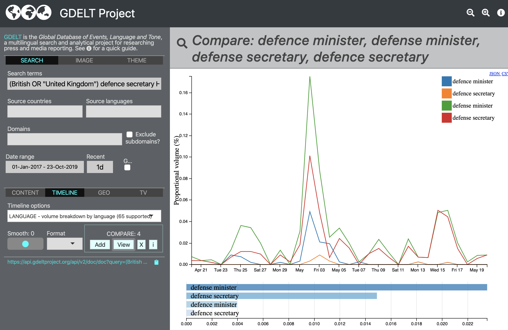

Article search, e.g. Bangladeshi corruption (link)
Searching by image tag, e.g. rocket/missile (link)
Searching by theme tag, e.g. cruise missile(s) (link)
Explore how images in results set were tagged (link)
Country level analysis, e.g. "Khashoggi" (link)
Due diligence and alternative spellings (link)
The COMPARE tool.. e.g. Arabic coverage (link)
Lost in Translation.. e.g. Huawei leak (link)

Television API example: AOC (link)
Television API clip view (link)
OS-INSIGHT: article search (Hong Kong example)
OS-INSIGHT: entities analysis
OS-INSIGHT: network analysis